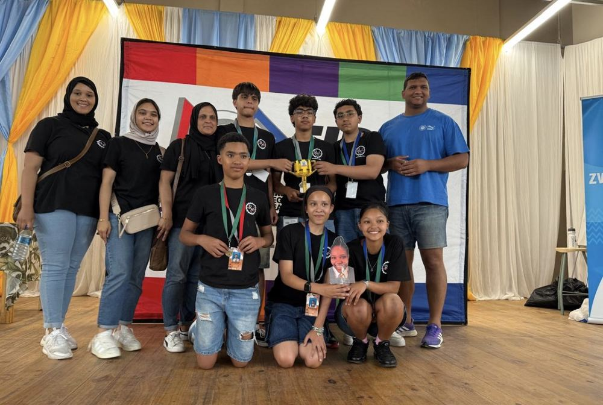
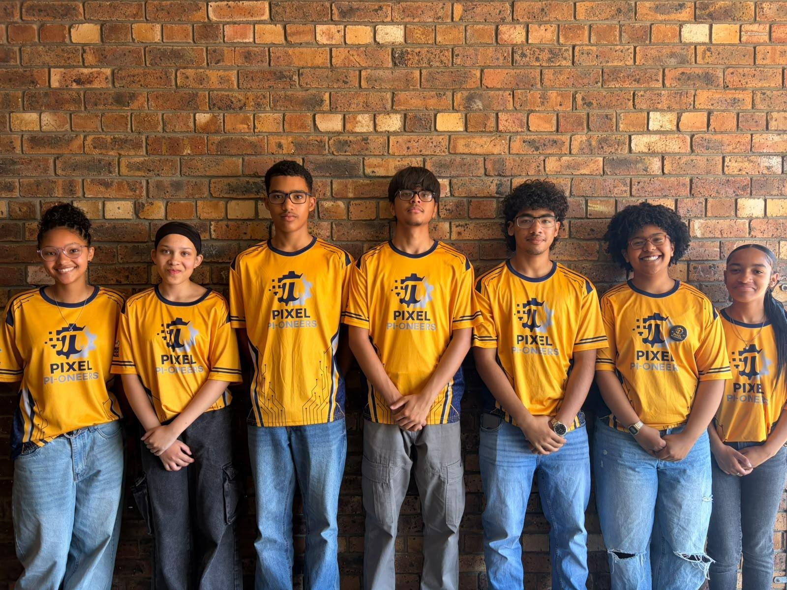
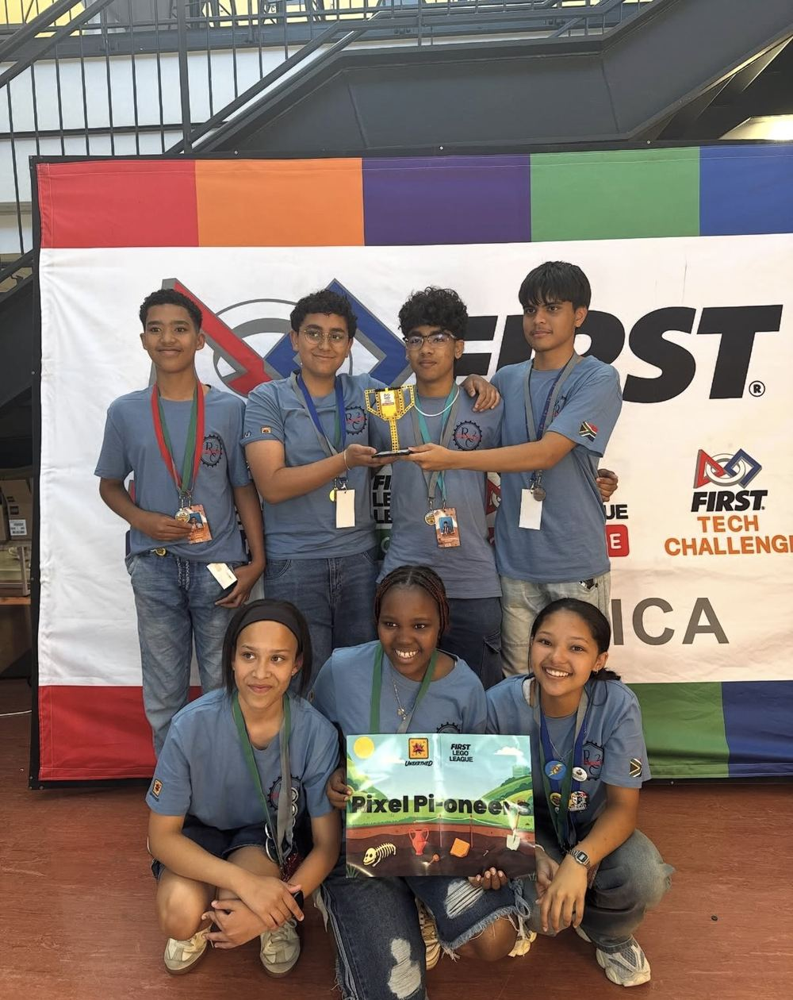
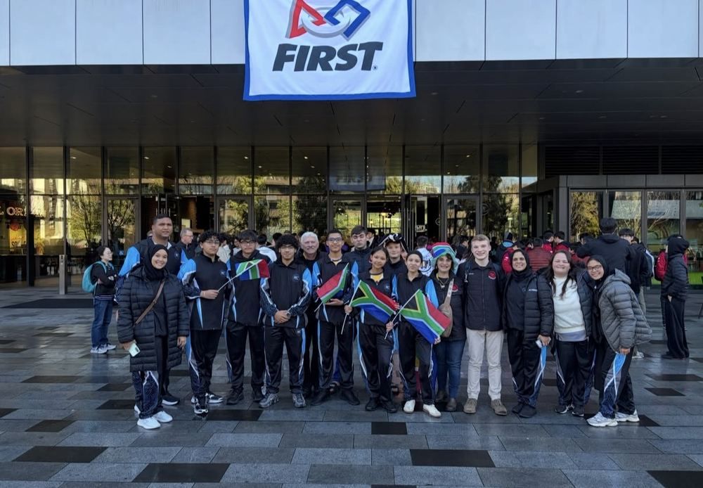
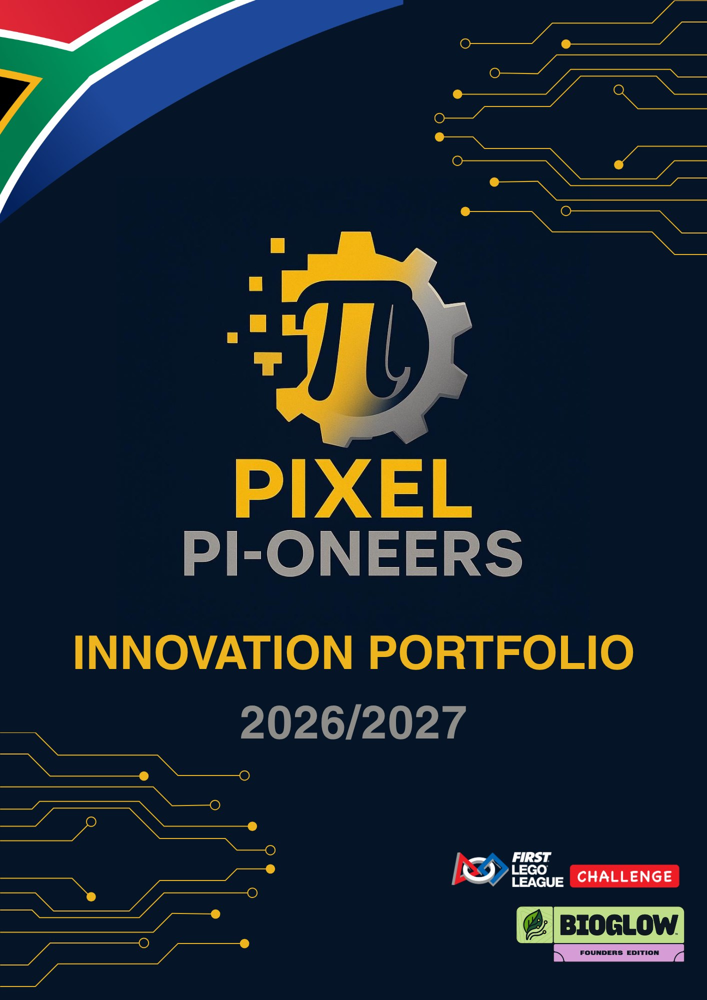
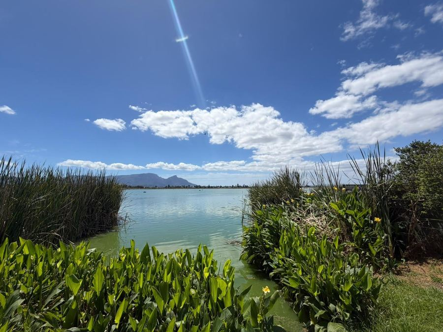
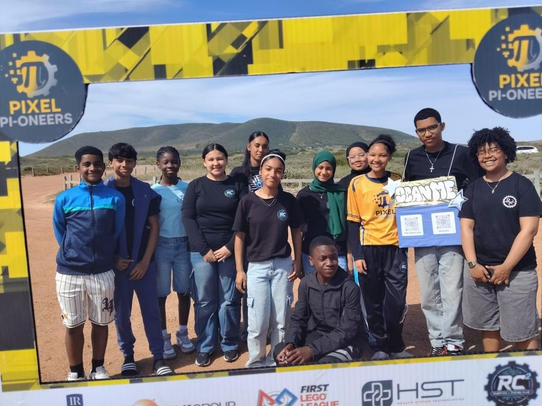

Regional Core Values
Winner
South African FIRST LEGO League team
We are Pixel Pi-oneers, a South African robotics team turning curiosity into code, ideas into engineering and challenges into opportunities.

Our debut season under the Pixel Pi-oneers name, 2025/26.

Winner

2nd place

Represented South Africa in Sydney
How our club grew into an FLL team.
Pixel Pi-oneers brings together different personalities, strengths and perspectives. We learn by building, improve by listening, and move forward by supporting one another.
Our journey began with our first FIRST LEGO League season in 2025/26. Since then, our work has grown from exploring archaeology to investigating ways technology can help protect freshwater biodiversity.
Our robotics journey began in 2022. We made an early mark by winning 1st place in the World Robot Olympiad Explorer category.
Meet the teamWe returned to the WRO Explorer category and earned 1st place for a second time, growing our confidence in design, problem-solving and teamwork.
Explore our projectsCompeting under a different team name, our members received the FIRST LEGO League Innovation Award and Engineering Excellence recognition.
Our FLL seasonsOur first season under the Pixel Pi-oneers name. We won Core Values at regionals, placed 2nd for the Champions Award at nationals, and represented South Africa at the Asia Pacific Open Championship in Sydney.
Explore UNEARTHEDWe are now investigating freshwater chemical contamination and how better monitoring can help identify potential risks to biodiversity.
Explore BIOGLOWEach challenge gives us a new reason to research, design, build, test and rethink what is possible.

Our debut season challenged us to explore archaeology and rethink how researchers identify promising excavation sites.

Our current season focuses on freshwater biodiversity and the need to identify unusual water-quality changes earlier.
Our innovation projects start with a question: what could work better, and how could we help?
Archaeologists can spend significant time surveying large landscapes where traces of past human activity may be hidden. Our first-season concept was a remote-controlled robotic survey system designed to gather information about soil and environmental conditions before excavation.
Using an Arduino UNO R4 WiFi, soil-moisture and DHT22 sensors, ultrasonic sensing and a live web interface, SoilScope aimed to help researchers inspect terrain and make better-informed decisions about where to investigate.
Freshwater ecosystems support a huge range of life, but pollution and changing water conditions can go unnoticed between occasional tests. CHEMTRACE is our modular water-monitoring and early-warning concept for rivers, vleis and wetlands.
Our prototype direction combines water-quality sensors, location-based records and a digital dashboard. Readings can be compared over time, helping identify unusual changes and potential hotspots that conservationists can investigate. It is an early-warning tool, not a laboratory test or a device that identifies every pollutant.
We take STEM beyond our team by teaching, mentoring, volunteering and making technology more accessible in our community.
We presented our innovation project, spoke with visitors at our booth and volunteered as robot-game referees.
Two Saturdays of practical learning with a robotics engineer and former FTC competitor, exploring Arduino and 3D printing.
With a facilitator from Delft Primary School, we introduced learners to coding and electronics.
During coastal research at Blaauwberg Nature Reserve, we helped clear litter from the shoreline and support the local ecosystem.
We showcased our FLL innovation project and robot alongside our FTC robot, spoke with visitors and gathered biodiversity questionnaire responses.
We support younger World Robot Olympiad teams with robot design, structural basics, game strategy and attachment choices.
We guide our club's rookie FLL team through rules, research, robot building, presentations and Pybricks coding.
Our portfolio records more than 5,700 views and 87 net followers in the previous 30 days through regular social posts.
Our BIOGLOW project connects with the United Nations Sustainable Development Goals (SDGs). These shared goals help explain why protecting freshwater matters to people, wildlife and ecosystems.
CHEMTRACE supports this goal by exploring ways to monitor freshwater conditions and flag unusual readings. Better information can help people investigate possible contamination sooner.
Healthy aquatic habitats support many living organisms. Tracking changes in water conditions can help conservationists identify locations that may need closer investigation and protection.
Rivers, wetlands and other freshwater systems connect with surrounding land ecosystems. Protecting these habitats also benefits plants, animals and communities that depend on them.
Builders, programmers, researchers, presenters and creative thinkers.
Pixel Pi-oneers is a South African robotics team built on curiosity, collaboration and a shared love of learning. Since our club began in 2022, we have grown through competitions, projects, mentoring and community experiences.
We bring together builders, programmers, researchers, presenters and creative thinkers. We learn from each other, share responsibilities and treat every challenge as a chance to improve.
Our team culture is grounded in respect, inclusion, perseverance and the belief that great ideas become stronger when everyone contributes.

Roles can overlap, and we encourage everyone to learn new skills and contribute beyond one speciality.
Designing, building, testing and improving our robot and attachments to solve each season's missions.
Writing and refining code, exploring sensors and using technology to make our robot more reliable.
Understanding real-world problems, gathering evidence, consulting others and developing solutions with purpose.
Presenting our work, mentoring younger teams, sharing STEM and connecting with our community.
Moments from competitions, workshops, fieldwork and community events. Select a photo to view it larger.
We are grateful to the organisations that supported our FLL UNEARTHED celebration event and helped make community engagement possible.
Think you know our journey? Try the mini challenge.
Interested in our projects, STEM outreach or the journey so far? We'd love to connect.
@pixelpi_oneers · pixel@sakhikamva.org